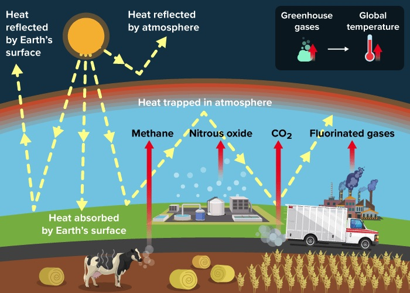
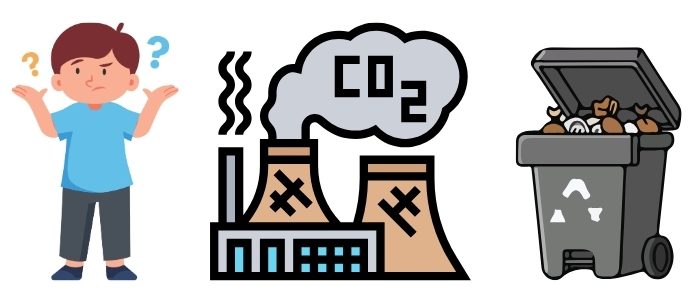
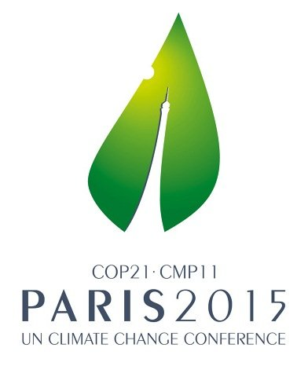
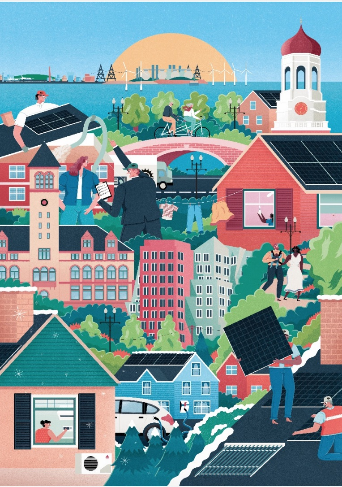
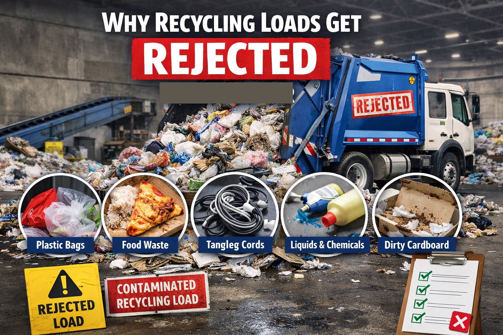
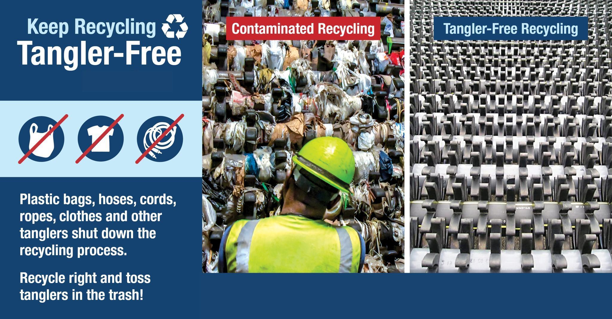
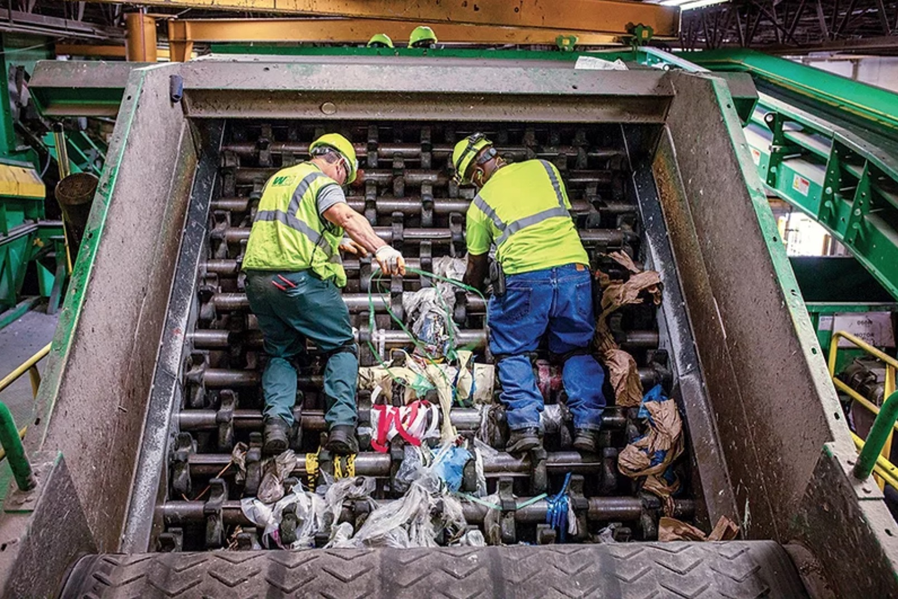
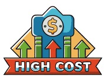

So What Is Global Warming?
Merriam-Webster defines global warming as "an increase in the earth's atmospheric and oceanic temperatures widely predicted to occur due to an increase in the greenhouse effect resulting especially from pollution."
Human activities like driving, farming, and manufacturing release greenhouse gases (CO2, methane, and nitrous oxide) that thicken the atmosphere. This layer acts like a "heat trap," allowing sunlight to enter but preventing heat from escaping back into space. As more heat is reflected back toward the surface rather than being released, the global temperature rises, leading to climate change.

Why Does Global Warming Matter?
Why should I care, I'm not running pollution factories?

The way you dispose waste has a major impact on climate change:
- Methane Powerhouse: The waste sector accounts for approximately 20% of global human-driven methane emissions. In the short term, methane is over 80 times more potent than CO2 at trapping heat.
- The "Oxygen-Free" Problem: When organic waste—such as food, paper, cardboard, and wood—is buried in landfills, it decomposes in an anaerobic (oxygen-free) environment. This creates "landfill gas," a potent mixture of methane and CO2.
- Slow Decay, Long-Term Impact: Unlike pollutants that dissipate quickly, organic matter in landfills decays slowly over decades. Discarded waste today will emit greenhouse gases for generations.
- Food Waste is the Primary Culprit: Globally, organic waste comprises about 65% of all municipal trash. Highly reactive food and green waste are the primary source of methane within the waste stream.
- A Growing Crisis: Global waste is projected to increase by 73% by 2050. Without improved systems, methane emissions from waste are expected to surge by 13 megatons per year over the next decade alone.
So what is the world doing to prevent global warming?
Global Action: Paris Agreement
The consensus is that while the Paris Agreement has successfully lowered the "worst-case" warming projections (moving us away from a 4°C+ future), current pledges still put the world on a path closer to 2.5°C–2.8°C unless implementation accelerates significantly.

Since 2022, the U.S. has accelerated its climate strategy through several key actions:
- Clean Energy Funding: The federal government is deploying hundreds of billions in tax credits from the Inflation Reduction Act to triple wind and solar capacity and subsidize domestic battery manufacturing.
- Emissions Regulation: The EPA has implemented new mandates to significantly reduce methane leaks from oil wells and increase the average fuel efficiency of new passenger vehicles to 49 mpg by 2026.
- Infrastructure Investment: National agencies are funding the installation of 500,000 electric vehicle charging stations and upgrading the power grid to support the transition to a low-carbon economy.

Cambridge Action
Cambridge’s action is driven by its Building Energy Use Disclosure Ordinance (BEUDO).
- The 2035 Cliff: While most cities aim for 2050 for total decarbonization, Cambridge amended BEUDO to require all non-residential buildings over 100,000 square feet (think the big biotech labs in Kendall Square) to reach Net Zero by 2035.
- The Economic Lever: If a building doesn't meet the target, they must pay a "compliance fee" into a green fund. This makes Cambridge the first city in the U.S. to effectively put a hard, local "expiration date" on fossil fuel use for large commercial properties.
Why Cambridge is unique:
Kendall Square. Biotech labs require massive amounts of energy for ventilation and 24/7 cooling. In 2026, Cambridge is the global "test case" for whether a high-tech economy can actually run on zero emissions.
How We Compare:
2035 Emission Reduction Targets: Global Leaderboard
| Rank | Country | 2035 Target | Base Year | Climate Status |
|---|---|---|---|---|
| 1 | Denmark | 82% – 85% | 1990 | Highest in the World |
| 2 | United Kingdom | 81% | 1990 | Global Benchmark |
| 3 | Norway | 70% – 75% | 1990 | Net-Zero Leader (Wealthy) |
| 4 | Germany | ~75% (est.) | 1990 | Industrial Heavyweight |
| 5 | United States | 61% – 66% | 2005 | High-Target / Policy Shift |
| 6 | China | ~10% (from peak) | 2025/30 | Absolute Peak Reached |
| 7 | The Gambia | Unconditional: 0% | N/A | Lowest Target (Baseline) |
2035 Climate Leaderboard: The Top 5 & Global Comparisons
| Global Rank | Country | 2035 NDC Target | Base Year | Climate Status |
|---|---|---|---|---|
| #1-3 | (Vacant) | — | — | No country is 1.5°C compatible |
| #4 | Denmark | 82% – 85% | 1990 | Highest Rank in the World |
| #5 | The Netherlands | 70% – 75% | 1990 | Leader in urban greening & EV |
| #6 | United Kingdom | 81% | 1990 | Fastest G7 decarbonizer |
| #7 | Philippines | 75% (Conditional) | 2010 | Developing nation frontrunner |
| #8 | Morocco | 45% – 50% | 2010 | Global leader in solar/renewables |
| #10 | Norway | 70% – 75% | 1990 | Top performing renewable sector |
| #16 | Germany | ~75% (est.) | 1990 | Industrial powerhouse transition |
| #28 | Brazil | 59% – 67% | 2005 | Focus on Amazon reforestation |
| #35 | India | 47% (Intensity) | 2005 | Falling due to coal expansion |
| #55 | China | ~10% (from peak) | 2025/30 | Low rank: coal vs. solar growth |
| #65 | United States | Target Voided* | — | Lowest among developed nations |
| #67 | Saudi Arabia | N/A | — | Lowest-ranked G20 nation |
*Note: As of early 2026, the CCPI ranks the U.S. at #65 because the 2035 targets previously set (61-66%) have been functionally voided or deprioritized by current administrative policy, leading to a "Critically Insufficient" rating.
2035 Climate Leaderboard: Massachusetts vs. U.S. States
Ranked by their 2035 Emission Reduction Targets and Policy Strength.
| State Rank | State | 2035 Target (vs. 1990) | Key 2026 Initiative | Policy Status |
|---|---|---|---|---|
| #1 | California | ~65% | Mandated 100% zero-emission car sales by 2035. | Gold Standard |
| #2 | Massachusetts | ~62% | Clean Energy & Climate Plan (CECP); massive heat pump rollout. | Top Tier |
| #3 | New York | ~60% | All-electric building mandates for new construction. | High Ambition |
| #4 | Washington | ~58% | "Cap-and-Invest" carbon market. | High Ambition |
| #10 | Maryland | ~55% | Aggressive offshore wind expansion targets. | Rising Leader |
| #25 | Illinois | ~45% | Climate & Equitable Jobs Act implementation. | Moderate |
| #28 | Texas | None | World Leader in Wind/Solar capacity. | Market-Driven |
| #35 | Florida | Prohibited | Statewide ban on "Net-Zero" policies. | Resistance |
| #50 | Wyoming | None | Focus on "Carbon Capture" for coal plants. | Low Ambition |
2035 Climate Leaderboard: Cambridge vs. MA Cities
Ranked by the aggressiveness of their 2035 sector-specific mandates
| Rank | City | 2035 Sector Target | Key 2026 Power Move | Climate "Persona" |
|---|---|---|---|---|
| #1 | Cambridge | Net Zero (Large Non-Residential) | BEUDO 2.0: Large labs/offices must be Net Zero by 2035 or pay high fees. | The "Lab" Leader |
| #2 | Boston | ~65% (Citywide) | BERDO 2.0: Hard emission caps for all buildings over 20k sq. ft. | The Urban Giant |
| #3 | Somerville | Carbon Net-Negative | Climate Forward Plan: Aiming to absorb more than they emit by 2050. | The Policy Pioneer |
| #4 | Worcester | 100% Renewable Electricity | Green Worcester: 100% renewable power citywide via aggregation. | The Grid Innovator |
| #5 | Salem | ~50% (Citywide) | Regional leader in Offshore Wind port infrastructure. | The Wind Port |
| #10 | Springfield | ~40% (Regional Target) | Focus on Climate Justice and urban tree canopy expansion. | The Equity Advocate |
What's the harm in just using my intuition?
Improperly sorted recycle does at least one of the four things:
It Turns Recyclables into Garbage:
The most significant impact of contamination is that it often ruins perfectly good recyclables.
- The "Spoiling" Effect: Items like greasy pizza boxes or unrinsed yogurt containers can leak onto paper and cardboard, making them impossible to process.
- Entire Batches Lost: If a load is too contaminated, recycling facilities cannot economically sort it. Consequently, as much as 20% of processed material (including the clean items) is diverted to landfills or incineration.

It Damages Sorting Machinery
Recycling centers rely on complex systems of conveyor belts and sensors that are not designed for "wishcycled" items.
- Clogs and Jams: Plastic bags, hoses, and "tanglers" can wrap around rotating sorting drums, forcing the entire facility to shut down for manual repairs.
- Sensor Interference: Materials like black plastics often cannot be detected by optical sorters, causing them to end up in the wrong streams and further contaminating the end products.

It Threatens Worker Safety
Humans are at the front lines of the sorting process, and contamination puts them at direct physical risk.
- Hazardous Materials: Batteries, "sharps" (needles), and chemical containers can cause fires, explosions, or puncture wounds when they reach the sorting line.
- Increased Handling: When bins are messy, workers must spend more time manually handling trash, increasing their exposure to these hazards.

It Increases Costs for Everyone
Contamination makes the business of recycling less economically viable.
- Higher Processing Fees: Cleaning and re-sorting contaminated batches can increase recycling costs by up to 25%.
- Taxpayer Impact: These additional operational costs are eventually passed back to consumers and taxpayers through increased waste management fees.

Our Collective Impact: A Deep Dive on Cambridge's Bold Actions with Waste Management
The City of Cambridge officially finalized and published its Zero Waste Master Plan 2.0 (ZWMP 2.0) in March 2025. This plan serves as a strategic roadmap to drastically reduce our city's waste footprint over the next decade and beyond.
The "North Star" Goals
Targeting a circular economy relative to our 2008 baseline:
Current Progress & Statistics
| Milestone | Current Status | The Impact |
|---|---|---|
| Trash Reduction | 36% (2024) | 14% gap remains to 2030 goal. |
| Recycling Quality | 4% Contamination | Saved the city $90,000 annually. |
| Compost Reach | 1-12 Unit Homes | Next: Large complexes (13+) & Small Biz. |
🏛️ Policies
Universal food waste diversion and mandatory zero-waste reporting for commercial buildings.
💰 Incentives
Exploring "Pay-As-You-Throw" models to financially reward waste reduction.